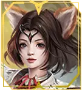
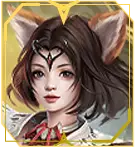
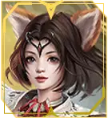

Kota Kelahiran: Kota Pedang
Tipe: Magic
Atribut Utama: Intelligence
Elemen: Earth, Fire, Water
Senjata: Flag, Mystic Sword, Wheel, Wand
Armor: Mystic Armor
Karakteristik Khusus: Mage. Mengkhususkan diri dalam mantra kerusakan berat. Ini menggunakan unsur-unsur alam: api, air dan tanah. Damage dapat ditangani dalam berbagai bentuk sesuai dengan elemen yang dipilih dan memiliki damage terkuat dalam game.

Server ini adalah representasi klasik sejati dari era emas Perfect World. Di sini, kamu akan merasakan kembali suasana nostalgia, tanpa harus bermain seperti pekerjaan karena tugas harian yang melelahkan, balapan abadi untuk mendapatkan peralatan baru, atau pembaruan global yang terus-menerus.